Brand Promise
To inspire every meal
with creativity and flavor.
Time for a Remix
Everyone has a home. For some, it’s beneath the city lights. For others, it’s a one red light town. Our home is Louisiana, where we pride ourselves on tradition and originality. Jazz was born in our backyard. Words like “hip” and “cool” were invented by the musicians of the Big Easy. Our vibrant flavor is exploding with free flowing rhythm. Food felt its first drop of our sauce in 1928 and was changed
forever. We were the first to use the state’s name and have always been made in Louisiana, using peppers, vinegar and salt.
The Classics
Sauce embodies the last step to every meal. It’s the final move before your first bite. We aim to deliver that perfect last note. The best musicians don’t quit until the last verse leaves a permanent imprint on the city sidewalks. Of course, this perfection doesn’t come easily. It takes years and years of practice to find the perfect taste. We show that hard work in every drop.